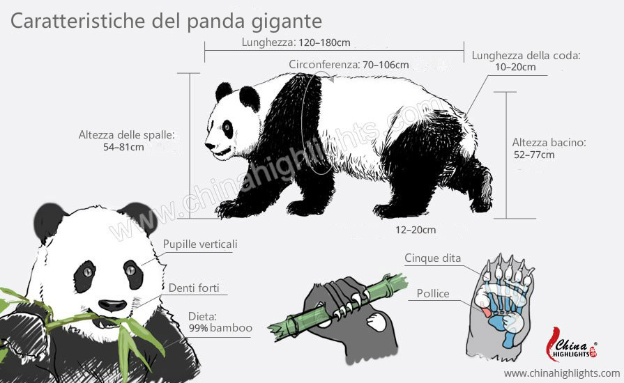

I panda
Ciao e benvenuti nel mio sito web.
L'aspetto dei panda
I panda sono mammiferi e sono bianchi con orecchie, piedi e nero intorno agli
occhi.
Sono originari della Cina centrale.
Sono alti circa da 60 a 90 cm.
Le spalle del panda sono alte circa 54-81 cm e lunghe 120-180 cm.
Anche se non riusciamo a vedere la loro coda la hanno, ed è lunga 10-20 cm

L'habitat
I panda vivono nelle foreste miste e piene di bambù dalla Cina sud-occidentale.